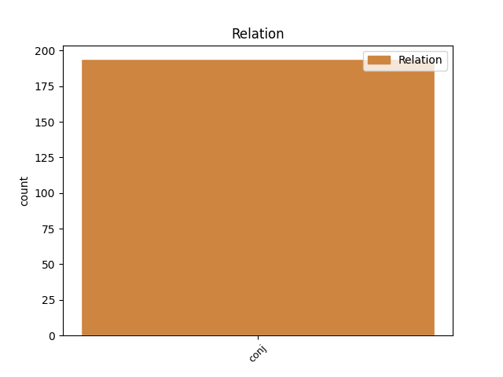
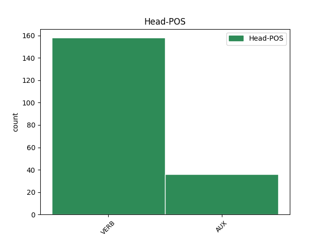
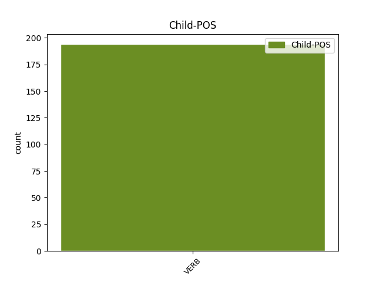

Distribution of features within this leaf



Agreement Rules sorted by frequency.
- When the dependent token is the conjunct(conj) of the head token, and the head token is VERB and the dependent token is VERB.
1 Ei _ _ _ _ 0 _ _ _
2 ole _ _ _ _ 0 _ _ _
3 mures _ _ _ _ 0 _ _ _
4 , _ _ _ _ 0 _ _ _
5 lihtsalt _ _ _ _ 0 _ _ _
6 üllatav _ _ _ _ 0 _ _ _
7 tähele _ _ _ _ 0 _ _ _
8 panek _ _ _ _ 0 _ _ _
9 - _ _ _ _ 0 _ _ _
10 selline _ _ _ _ 0 _ _ _
11 püss _ _ _ _ 0 _ _ _
12 , _ _ _ _ 0 _ _ _
13 selline _ _ _ _ 0 _ _ _
14 piibel _ _ _ _ 0 _ _ _
15 ja _ _ _ _ 0 _ _ _
16 astus _ _ _ _ 0 _ _ _
17 ämbrisse _ _ _ _ 0 _ _ _
18 kuna _ _ _ _ 0 _ _ _
19 üks _ _ _ _ 0 _ _ _
20 kruvi _ _ _ _ 0 _ _ _
21 jäi jääma VERB V Mood=Ind|Number=Sing|Person=3|Tense=Past|VerbForm=Fin|Voice=Act 0 _ _ _
22 panematta _ _ _ _ 0 _ _ _
23 ja _ _ _ _ 0 _ _ _
24 nüüd _ _ _ _ 0 _ _ _
25 kõriseb kõrisema VERB V Mood=Ind|Number=Sing|Person=3|Tense=Pres|VerbForm=Fin|Voice=Act 21 conj _ SpaceAfter=No
26 . _ _ _ _ 0 _ _ _
1 Aga _ _ _ _ 0 _ _ _
2 kus _ _ _ _ 0 _ _ _
3 on olema AUX V Mood=Ind|Number=Sing|Person=3|Tense=Pres|VerbForm=Fin|Voice=Act 0 _ _ _
4 kirjas _ _ _ _ 0 _ _ _
5 , _ _ _ _ 0 _ _ _
6 et _ _ _ _ 0 _ _ _
7 telo _ _ _ _ 0 _ _ _
8 on _ _ _ _ 0 _ _ _
9 katki _ _ _ _ 0 _ _ _
10 , _ _ _ _ 0 _ _ _
11 kõik _ _ _ _ 0 _ _ _
12 ju _ _ _ _ 0 _ _ _
13 väidavad väitma VERB V Mood=Ind|Number=Plur|Person=3|Tense=Pres|VerbForm=Fin|Voice=Act 3 conj _ SpaceAfter=No
14 , _ _ _ _ 0 _ _ _
15 et _ _ _ _ 0 _ _ _
16 neil _ _ _ _ 0 _ _ _
17 ka _ _ _ _ 0 _ _ _
18 krõbiseb _ _ _ _ 0 _ _ _
19 ja _ _ _ _ 0 _ _ _
20 mitte _ _ _ _ 0 _ _ _
21 ainult _ _ _ _ 0 _ _ _
22 sungid _ _ _ _ 0 _ _ _
23 . _ _ _ _ 0 _ _ _
Disagree Examples:
1 Aga _ _ _ _ 0 _ _ _
2 nagu _ _ _ _ 0 _ _ _
3 ma _ _ _ _ 0 _ _ _
4 ütlesin ütlema VERB V Mood=Ind|Number=Sing|Person=1|Tense=Past|VerbForm=Fin|Voice=Act 0 _ _ _
5 ka _ _ _ _ 0 _ _ _
6 Sulele _ _ _ _ 0 _ _ _
7 , _ _ _ _ 0 _ _ _
8 et _ _ _ _ 0 _ _ _
9 mõista _ _ _ _ 0 _ _ _
10 mõttetera _ _ _ _ 0 _ _ _
11 on olema VERB V Mood=Ind|Number=Sing|Person=3|Tense=Pres|VerbForm=Fin|Voice=Act 4 conj _ _
12 vaja _ _ _ _ 0 _ _ _
13 teemasse _ _ _ _ 0 _ _ _
14 süveneda _ _ _ _ 0 _ _ _
15 . _ _ _ _ 0 _ _ _
1 Aga _ _ _ _ 0 _ _ _
2 nagu _ _ _ _ 0 _ _ _
3 ütlesin ütlema VERB V Mood=Ind|Number=Sing|Person=1|Tense=Past|VerbForm=Fin|Voice=Act 0 _ _ _
4 asjast _ _ _ _ 0 _ _ _
5 saab saama VERB V Mood=Ind|Number=Sing|Person=3|Tense=Pres|VerbForm=Fin|Voice=Act 3 conj _ _
6 parema _ _ _ _ 0 _ _ _
7 ülevaate _ _ _ _ 0 _ _ _
8 ise _ _ _ _ 0 _ _ _
9 lugedes _ _ _ _ 0 _ _ _
1 Kuu _ _ _ _ 0 _ _ _
2 aega _ _ _ _ 0 _ _ _
3 sõitsin _ _ _ _ 0 _ _ _
4 , _ _ _ _ 0 _ _ _
5 siis _ _ _ _ 0 _ _ _
6 tundsin _ _ _ _ 0 _ _ _
7 , _ _ _ _ 0 _ _ _
8 et _ _ _ _ 0 _ _ _
9 hobune _ _ _ _ 0 _ _ _
10 ei _ _ _ _ 0 _ _ _
11 allu _ _ _ _ 0 _ _ _
12 enam _ _ _ _ 0 _ _ _
13 säärele _ _ _ _ 0 _ _ _
14 , _ _ _ _ 0 _ _ _
15 kangutab kangutama VERB V Mood=Ind|Number=Sing|Person=3|Tense=Pres|VerbForm=Fin|Voice=Act 0 _ _ _
16 ees _ _ _ _ 0 _ _ _
17 ja _ _ _ _ 0 _ _ _
18 mina _ _ _ _ 0 _ _ _
19 nagu _ _ _ _ 0 _ _ _
20 ikka _ _ _ _ 0 _ _ _
21 suht _ _ _ _ 0 _ _ _
22 väga _ _ _ _ 0 _ _ _
23 lösutasin lösutama VERB V Mood=Ind|Number=Sing|Person=1|Tense=Past|VerbForm=Fin|Voice=Act 15 conj _ _
24 seal _ _ _ _ 0 _ _ _
25 seljas _ _ _ _ 0 _ _ _
26 kah _ _ _ _ 0 _ _ _
27 . _ _ _ _ 0 _ _ _
1 aga _ _ _ _ 0 _ _ _
2 sa _ _ _ _ 0 _ _ _
3 proovi _ _ _ _ 0 _ _ _
4 välja _ _ _ _ 0 _ _ _
5 uurida _ _ _ _ 0 _ _ _
6 milles _ _ _ _ 0 _ _ _
7 asi _ _ _ _ 0 _ _ _
8 küsi _ _ _ _ 0 _ _ _
9 , _ _ _ _ 0 _ _ _
10 küsi _ _ _ _ 0 _ _ _
11 otse _ _ _ _ 0 _ _ _
12 ja _ _ _ _ 0 _ _ _
13 korduvalt _ _ _ _ 0 _ _ _
14 , _ _ _ _ 0 _ _ _
15 et _ _ _ _ 0 _ _ _
16 milles _ _ _ _ 0 _ _ _
17 asi _ _ _ _ 0 _ _ _
18 ja _ _ _ _ 0 _ _ _
19 miks _ _ _ _ 0 _ _ _
20 nad _ _ _ _ 0 _ _ _
21 nii _ _ _ _ 0 _ _ _
22 käituvad _ _ _ _ 0 _ _ _
23 jne. _ _ _ _ 0 _ _ _
24 igast _ _ _ _ 0 _ _ _
25 erinevaid _ _ _ _ 0 _ _ _
26 küsimusi _ _ _ _ 0 _ _ _
27 , _ _ _ _ 0 _ _ _
28 küll _ _ _ _ 0 _ _ _
29 nad _ _ _ _ 0 _ _ _
30 lõpuks _ _ _ _ 0 _ _ _
31 vastavad vastama VERB V Mood=Ind|Number=Plur|Person=3|Tense=Pres|VerbForm=Fin|Voice=Act 0 _ _ _
32 , _ _ _ _ 0 _ _ _
33 milles _ _ _ _ 0 _ _ _
34 asi _ _ _ _ 0 _ _ _
35 ! _ _ _ _ 0 _ _ _
36 ? _ _ _ _ 0 _ _ _
37 küsi küsima VERB V Mood=Imp|Number=Sing|Person=2|Tense=Pres|VerbForm=Fin|Voice=Act 31 conj _ _
38 korduvalt _ _ _ _ 0 _ _ _
39 ! _ _ _ _ 0 _ _ _
40 see _ _ _ _ 0 _ _ _
41 võib _ _ _ _ 0 _ _ _
42 valus _ _ _ _ 0 _ _ _
43 olla _ _ _ _ 0 _ _ _
44 , _ _ _ _ 0 _ _ _
45 aga _ _ _ _ 0 _ _ _
46 parem _ _ _ _ 0 _ _ _
47 oleks _ _ _ _ 0 _ _ _
48 teada _ _ _ _ 0 _ _ _
49 ! _ _ _ _ 0 _ _ _
1 Nojah _ _ _ _ 0 _ _ _
2 , _ _ _ _ 0 _ _ _
3 ..... _ _ _ _ 0 _ _ _
4 aga _ _ _ _ 0 _ _ _
5 see _ _ _ _ 0 _ _ _
6 kui _ _ _ _ 0 _ _ _
7 ma _ _ _ _ 0 _ _ _
8 ühe _ _ _ _ 0 _ _ _
9 teise _ _ _ _ 0 _ _ _
10 sõbrannaga _ _ _ _ 0 _ _ _
11 peole _ _ _ _ 0 _ _ _
12 läksikn _ _ _ _ 0 _ _ _
13 siis _ _ _ _ 0 _ _ _
14 ta _ _ _ _ 0 _ _ _
15 ütles _ _ _ _ 0 _ _ _
16 : _ _ _ _ 0 _ _ _
17 Sa _ _ _ _ 0 _ _ _
18 lähed minema VERB V Mood=Ind|Number=Sing|Person=2|Tense=Pres|VerbForm=Fin|Voice=Act 0 _ _ _
19 temaga _ _ _ _ 0 _ _ _
20 peole _ _ _ _ 0 _ _ _
21 ? _ _ _ _ 0 _ _ _
22 ma _ _ _ _ 0 _ _ _
23 ütlesin ütlema VERB V Mood=Ind|Number=Sing|Person=1|Tense=Past|VerbForm=Fin|Voice=Act 18 conj _ _
24 et _ _ _ _ 0 _ _ _
25 jah _ _ _ _ 0 _ _ _
26 , _ _ _ _ 0 _ _ _
27 siis _ _ _ _ 0 _ _ _
28 mingi _ _ _ _ 0 _ _ _
29 4 _ _ _ _ 0 _ _ _
30 minta _ _ _ _ 0 _ _ _
31 pärast _ _ _ _ 0 _ _ _
32 : _ _ _ _ 0 _ _ _
33 Ma _ _ _ _ 0 _ _ _
34 tulen _ _ _ _ 0 _ _ _
35 ka _ _ _ _ 0 _ _ _
36 teiega _ _ _ _ 0 _ _ _
37 sinna _ _ _ _ 0 _ _ _
38 peole _ _ _ _ 0 _ _ _
39 ! _ _ _ _ 0 _ _ _
40 ! _ _ _ _ 0 _ _ _
41 ! _ _ _ _ 0 _ _ _
42 ! _ _ _ _ 0 _ _ _
43 mA _ _ _ _ 0 _ _ _
44 ei _ _ _ _ 0 _ _ _
45 tahtud _ _ _ _ 0 _ _ _
46 teda _ _ _ _ 0 _ _ _
47 üldse _ _ _ _ 0 _ _ _
48 sinna _ _ _ _ 0 _ _ _
49 peole _ _ _ _ 0 _ _ _
50 ja _ _ _ _ 0 _ _ _
51 üütlesin _ _ _ _ 0 _ _ _
52 sellele _ _ _ _ 0 _ _ _
53 sõbrantsile _ _ _ _ 0 _ _ _
54 kes _ _ _ _ 0 _ _ _
55 mind _ _ _ _ 0 _ _ _
56 sinna _ _ _ _ 0 _ _ _
57 kutsus _ _ _ _ 0 _ _ _
58 et _ _ _ _ 0 _ _ _
59 ütle _ _ _ _ 0 _ _ _
60 talle _ _ _ _ 0 _ _ _
61 et _ _ _ _ 0 _ _ _
62 sul _ _ _ _ 0 _ _ _
63 ei _ _ _ _ 0 _ _ _
64 lubata _ _ _ _ 0 _ _ _
65 , _ _ _ _ 0 _ _ _
66 palun _ _ _ _ 0 _ _ _
67 . _ _ _ _ 0 _ _ _